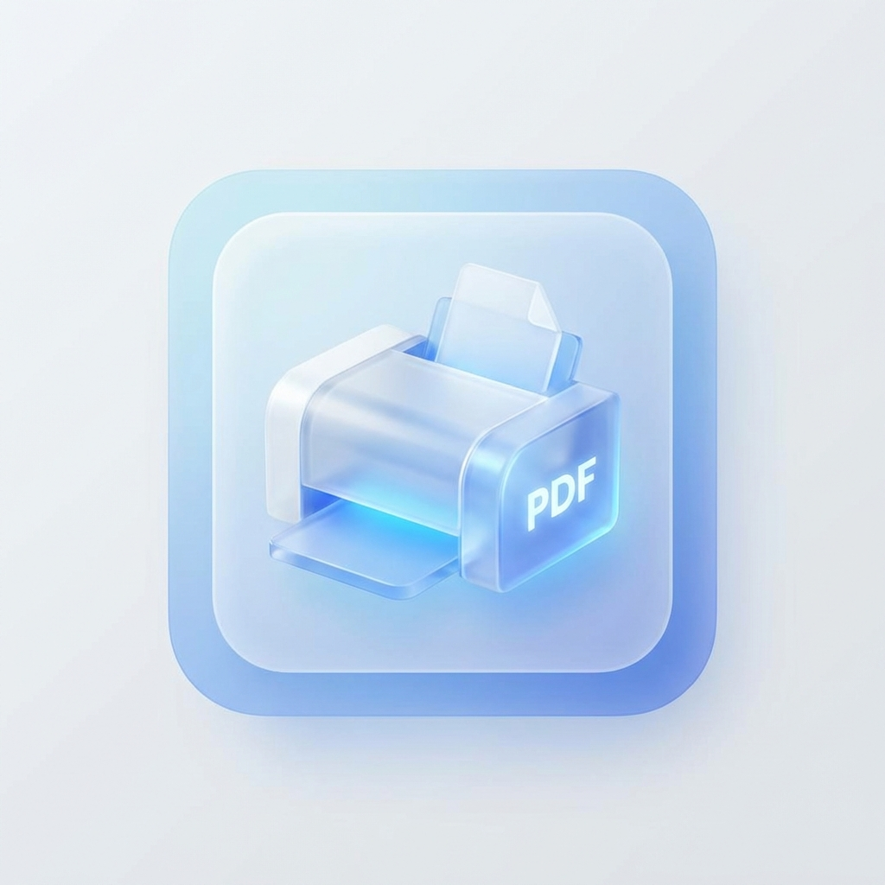

PRINT_A4 / PRINT_A5）や管理票を自動で印刷します。パソコンの電源を入れると自動で動き出し、裏でずっと待機しています。普段どおり成約すれば、印刷は自動で行われます。
1. アプリが動いているか確認する

画面右下の時計の近く（タスクトレイ）に、このアイコンが出ていれば動いています。
隠れている場合は、時計の左にある 「∧」（上向きの矢印） をクリックすると、隠れているアイコンが表示されます。
images/tray_icon.png）アイコンが見当たらないとき → 「6. 困ったとき」の「アプリが起動していない」を見てください。
2. プリンターの設定（いちばん大事）
印刷先のプリンターは、トレイアイコンを右クリックするだけで選べます。ファイルを編集する必要はありません。
手順
- タスクトレイのアプリのアイコンを 右クリック
- メニューが開きます（下の図のような内容）
┌─────────────────────────────┐ │ A4/A5 Printer ▶ │ ← 質札（A4・A5）用のプリンター │ 管理票 Printer ▶ │ ← 管理票（ラベル）用のプリンター │ ───────────────────────── │ │ Quit │ ← アプリを終了 └─────────────────────────────┘
- 設定したい方にマウスを合わせると、プリンターの一覧（▶の先）が開きます
- 使いたいプリンターをクリックすると、チェック（●）が付いて設定完了です
A4/A5 Printer（質札用）
質札（ファイル名に PRINT_A4 PRINT_A5 が付くもの）を印刷するプリンターです。
A4/A5 Printer ▶ ┌──────────────────────────────────────┐ │ ● Default Printer（通常使うプリンター）│ │ A4白黒印刷 Brother HL-L5210DW series │ ← これを選ぶ例 │ カラーコピー Brother MFC-L8610CDW │ │ Microsoft Print to PDF │ └──────────────────────────────────────┘
- 普段使うプリンターでよければ 「Default Printer」 のままでOK
- 特定のプリンターに出したいときは、そのプリンター名をクリック
管理票 Printer（管理票・ラベル用）
管理票（ファイル名が 管理票… のもの）を印刷するラベルプリンターです。
管理票 Printer ▶ ┌──────────────────────────────────────┐ │ (未設定) │ │ ● 管理表最新 │ ← ラベルプリンターを選ぶ │ A4白黒印刷 Brother HL-L5210DW series │ └──────────────────────────────────────┘
- ここでラベルプリンターを選ぶ（例：QL-820NWB のラベルプリンター）
- 「(未設定)」のままだと管理票は印刷されないので、必ず選んでください
3. 印刷のテスト
設定できたら、実際に印刷されるか試してみましょう。
- 普段どおり質札を1件 成約する（または、ファイル名に
PRINT_A4を含むPDFをダウンロードフォルダに置く） - 自動でプリンターから印刷されればOKです 🎉
うまくいかないときは「6. 困ったとき」を見てください。
4. 毎日の使い方
基本は 何もしなくてOK。パソコンを起動すれば自動で待機し、成約すれば自動で印刷されます。
| やりたいこと | 操作 |
|---|---|
| 普通に使う | 何もしなくてOK（自動で動いています） |
| アプリを止めたい | トレイアイコンを右クリック →「Quit」 |
| もう一度動かしたい | デスクトップ／フォルダの start_hidden.vbs をダブルクリック |
| パソコンを再起動した | 自動でまた動き出します（操作不要） |
5. 印刷されるファイルのルール
ダウンロードフォルダに入ったファイルのうち、名前で印刷対象が決まります。
| ファイル名 | 印刷先 |
|---|---|
〇〇PRINT_A4〇〇.pdf / .html | A4/A5 Printer（A4サイズ） |
〇〇PRINT_A5〇〇.pdf / .html | A4/A5 Printer（A5サイズ） |
管理票〇〇.html / .pdf | 管理票 Printer（ラベル） |
上記以外の名前のファイルは印刷されません（無視されます）。
6. 困ったとき（かんたん対処）
印刷されない
- トレイにアイコンがあるか確認（「1.」を参照）。なければ下の「アプリが起動していない」へ
- ファイル名に
PRINT_A4/PRINT_A5/管理票が入っているか確認 - プリンターが選ばれているか確認（「2.」を参照。特に管理票は「(未設定)」になっていないか）
- プリンターの電源・接続・用紙を確認
- それでも直らないときは、アプリを最新版に更新してみてください（「8.」を参照）
印刷が遅い／たまる
- プリンターがオフライン・用紙切れ・エラーになっていないか確認してください
- Windowsの「プリンターとスキャナー」で、そのプリンターが「オフライン」になっていないか確認
アプリが起動していない（トレイにアイコンがない）
- インストールフォルダを開く
場所：「ドキュメント」フォルダの中のpawn-auto-printer（以前から使っているパソコンはC:\Program Files (x86)\pawn-auto-printer\dev\pawn-auto-printer） start_hidden.vbsをダブルクリック- トレイにアイコンが出れば復活です
- それでも出ない場合は、IT担当に連絡してください
パソコン起動時に自動で立ち上げる（最初に一度だけ）
毎回手動で起動しなくてよいように、PCを起動したら自動でアプリが立ち上がるよう設定します。一度やれば、以降はずっと自動で起動します。
- エクスプローラーのアドレスバーに、次を貼り付けて Enter（「スタートアップ」フォルダが開きます）：
%AppData%\Microsoft\Windows\Start Menu\Programs\Startup - インストールフォルダ（上記の場所）の
start_hidden.vbsを右クリック →「コピー」 - 開いた「Startup」フォルダの中で右クリック →「ショートカットの貼り付け」
パソコン起動時にエラーのメッセージが出る（フォルダを移動したあと）
「スクリプト ファイル … start_hidden.vbs が見つかりません」というエラーが、PC起動時に出ることがあります。
"C:\Users\…\pawn-auto-printer\dev\pawn-auto-printer\start_hidden.vbs" が見つかりません。
原因： アプリのフォルダを移動したのに、自動起動の登録が古い場所を指したままになっているためです（アプリ自体は別の登録で起動していることが多いです）。
直し方（古い登録を消す）：
- エクスプローラーのアドレスバーに貼り付けて Enter：
%AppData%\Microsoft\Windows\Start Menu\Programs\Startup - 中のショートカットを右クリック →「プロパティ」で「リンク先」を確認
- 古い場所を指しているショートカットを削除（今のフォルダを指すものは残す）
- それでも出る場合は、スタートメニューで「タスク スケジューラ」を開き、「タスク スケジューラ ライブラリ」の中の
PDFAutoPrinterを右クリック →「削除」
7. ふだんは触らない設定（上級者・IT担当向け）
通常のプリンター設定は「2.」のトレイメニューだけで完結します。以下の config.json（設定ファイル）は普段は編集しないでください。編集を間違えるとアプリが動かなくなることがあります。
必要な場合のみ、config.json をメモ帳で開いて編集します（保存は UTF-8 のまま）。
| 項目 | 意味 | 備考 |
|---|---|---|
target_printer | 質札用プリンター | 通常はトレイメニューで設定（手編集不要） |
kanrihyo_printer | 管理票用プリンター | 通常はトレイメニューで設定（手編集不要） |
kanrihyo_paper_size | 管理票の用紙サイズ | 例：62mm。空にするとプリンター既定 |
watch_directory | 監視するフォルダ | 空ならダウンロードフォルダ |
start_hidden.vbs）すると反映されます。8. アプリの更新（IT担当向け）
アプリは起動するたびに、自動で最新版に更新されます。ふだんは何もする必要はありません（パソコンを起動すれば最新版になります）。
今すぐ更新したいとき／自動更新が入る前の古いアプリのとき
どのパソコンでも、同じコマンドを1行貼り付けるだけで更新できます。アプリの保存場所は自動で探すので、フォルダを開く必要はありません。
- スタートボタンを右クリック →「Windows PowerShell」（Windows 11 では「ターミナル」）を開く（「管理者として実行」は選ばずに、普通に開いてください）
- 下のコマンドを「コピー」ボタンでコピーし、PowerShell に貼り付けて（右クリックまたは Ctrl+V）Enter：
[Net.ServicePointManager]::SecurityProtocol='Tls12'; irm https://raw.githubusercontent.com/assist-grp/pawn-auto-printer/main/update.ps1 | iex
- 最後に
VERSION: …の行と「Done.」が表示されれば完了です。アプリは自動で再起動されるので、アプリやパソコンの再起動は不要です。あわせて、下の「自動更新できるかの確認」の表示も見てください
- アプリを動かしている Windows ユーザーでサインインして実行してください（ユーザーごとに必要です）
- 印刷していないときに実行してください（再起動の瞬間に届いたファイルは印刷されないことがあります）
- プリンター設定（
config.json）は変更されません
[ERROR] や、下の表にない [WARN] が表示されたときは、画面の文字をそのままコピーして IT担当に送ってください。自動更新できるかの確認（更新コマンドの結果を見る）
アプリは管理者権限なしで動くため、アプリのフォルダに書き込めないと自動更新が失敗し、古い版のまま動き続けます（C:\Program Files (x86) の下は、ふつうは書き込めません）。上の更新コマンドはこの確認も一緒に行うので、表示された結果を見てください。
| 表示 | 意味・やること |
|---|---|
[OK] auto-update can write to this folder | 問題ありません。今後も自動で更新されます |
[WARN] auto-update CANNOT write to this folder | このフォルダでは自動更新ができません。下の「アプリのフォルダを移す」の手順で移してください ※ Program Files に置いているパソコンは、移さずにそのまま使います。その場合は自動更新されないので、更新したいときは PowerShell を「管理者として実行」で開いて更新コマンドを実行してください |
[NOTE] The app is inside the Downloads folder | アプリがダウンロードフォルダの中にあります。整理したときに消してしまわないよう、下の「アプリのフォルダを移す」の手順で移してください |
[NOTE] PowerShell is running as administrator | 管理者として開いたため確認できていません。PowerShell を普通に開き直して、もう一度実行してください |
アプリのフォルダを移す（ダウンロードフォルダにあるとき／自動更新ができないと表示されたとき）
次のコマンドで、アプリを「ドキュメント」フォルダの中（例：C:\Users\（ユーザー名）\Documents\pawn-auto-printer）へ自動で移せます。プリンター設定・自動起動・ショートカットもそのまま引き継がれます。
- PowerShell を普通に開く（「管理者として実行」は選ばない）
- 下のコマンドをコピーして貼り付け、Enter：
[Net.ServicePointManager]::SecurityProtocol='Tls12'; irm https://raw.githubusercontent.com/assist-grp/pawn-auto-printer/main/move_to_documents.ps1 | iex
- 途中で「このアプリがデバイスに変更を加えることを許可しますか？」と出たら「はい」（自動起動の登録とウイルス対策の除外設定を、新しい場所に合わせるためです）
- 最後に「Done.」と表示されれば完了。古いフォルダは自動で削除されます
config.json も）「ドキュメント」へコピー → 自動起動・ショートカット・ウイルス対策の除外設定を新しい場所に合わせる → 新しい場所で起動できたことを確かめてから、古いフォルダを削除します。アプリが Program Files にある場合や、すでに「ドキュメント」にある場合は、何もしません。
手作業で移す場合（コマンドが使えないとき）：
- タスクトレイのアイコンを右クリック →「Quit」で、アプリを止める
- エクスプローラーの左側の「ドキュメント」を開き、その中に
pawn-auto-printerフォルダを作って、今のアプリのフォルダの中身を全部コピーする（config.jsonも一緒にコピーすれば、プリンター設定はそのまま使えます） - 新しいフォルダの
register_autostart.batを右クリック →「管理者として実行」（自動起動の登録し直し。アプリも起動します） - スタートアップに古い場所を指すショートカットが残っていれば削除する（アドレスバーに
shell:startupと入力して Enter で開けます。手順は「6.」の「パソコン起動時にエラーのメッセージが出る」と同じ）。デスクトップのショートカットも、新しいフォルダのcreate_desktop_shortcut.batで作り直す - 上の更新コマンドをもう一度実行し、
[OK] auto-update can write to this folderと出れば完了。古いフォルダは削除してかまいません
こまったら
- 動作の記録は
printer_log.txt（インストールフォルダ内）に残っています。トラブル時はこのファイルを IT担当に見せると原因が分かりやすくなります。 - インストールや詳しい不具合対応は、上の「🛠️ インストール（IT担当向け）」タブを参照してください。
はじめに：用意するもの・かかる時間
- インターネット接続（必要なソフトをダウンロードします）
- 管理者の権限（インストールには管理者として実行が必要です）
- 時間の目安：10〜20分
C:\Users\（ユーザー名）\Documents\pawn-auto-printer）。アプリは管理者権限なしで動くので、Program Files などに置くと自動更新ができません。ダウンロードフォルダも、整理したときに消してしまう恐れがあるので避けてください。「ドキュメント」が OneDrive と同期されている場合は、フォルダを右クリック →「このデバイス上で常に保持する」を選んでください。
このアプリでやること（全体の流れ）
- アプリに必要なソフト（Python・SumatraPDF・部品）を入れる
- アプリを起動して、パソコン起動時に自動で立ち上がるようにする
- プリンターを選ぶ（→ スタッフ向けタブ）
ステップ 1：必要なソフトを入れる
2つのやり方があります。まずは「方法A」を試し、止まったり失敗したら「方法B」に進んでください。
方法A：自動インストール（ワンクリック）
install_all.batを右クリック →「管理者として実行」を選ぶ
※ ダブルクリックではなく「右クリック →管理者として実行」が確実です- 「このアプリがデバイスに変更を加えることを許可しますか？」と出たら「はい」
- 黒い画面でインストールが進みます。完了まで数分待ちます
winget という仕組みの不調です。
方法B：手動インストール（確実）
winget を使わないので、いちばん確実です。順番にやってください。
① Python を入れる
- ブラウザで https://www.python.org/downloads/ を開く
- 「Download Python」をクリックしてダウンロード
- ダウンロードしたファイルを実行
- 最初の画面のいちばん下の「Add python.exe to PATH」に必ずチェックを入れる ← これが最重要
- 「Install Now」を押して、完了まで待つ
② SumatraPDF を入れる（PDFの印刷に使います）
- https://www.sumatrapdfreader.org/download-free-pdf-viewer を開く
- 「64-bit Installer」をダウンロードして実行
③ 部品（ライブラリ）を入れる
- スタートメニューで「PowerShell」を開く（黒い画面が出ます）
- 次の1行をコピーして貼り付け、Enter（フォルダ移動は不要）：
py -m pip install pywin32 pystray watchdog Pillow - 「Successfully installed」または「already satisfied」と出れば成功です
ステップ 2：アプリを起動する
start_hidden.vbs をダブルクリックします。画面右下のタスクトレイ（時計の近く）にアプリのアイコンが出れば成功です（黒い画面は出ません）。
アイコンが出ない／エラーが出る場合は、debug_runner.bat をダブルクリックすると、原因のメッセージが表示されます（下のトラブルシューティング参照）。
ステップ 3：パソコン起動時に自動で立ち上げる
いちばん確実なのは register_autostart.bat を右クリック →「管理者として実行」する方法です。
.bat が動かないPCでは、スタートアップフォルダにショートカットを入れる方法を使います：
- エクスプローラーのアドレスバーに貼り付けて Enter：
%AppData%\Microsoft\Windows\Start Menu\Programs\Startup - インストールフォルダの
start_hidden.vbsを右クリック →「コピー」 - 開いた「Startup」フォルダ内で右クリック →「ショートカットの貼り付け」
ステップ 4：プリンターを選ぶ（使い始める設定）
ここまでできたら、上の「👤 スタッフ向け」タブの「2. プリンターの設定」を見て、印刷先のプリンターを選んでください。トレイアイコンを右クリックするだけで設定できます。
C:\Program Files (x86) の下は、ふつうは書き込めません）。インストール後に一度、更新コマンドで確認してください（「👤 スタッフ向け」タブの「8. アプリの更新」）。トラブルシューティング
winget で Python が入らない / 「パッケージが見つかりません」
install_all.bat 実行中に止まる場合、winget が古いか Python を取得できていません。
解決： 上の「方法B」で Python を python.org から直接インストールしてください。install_all.bat は最初に PATH 上の Python を探すため、手動で入れれば winget の手順は自動でスキップされます。
install_all.bat が途中で止まる / winget が固まる
「99%のまま動かない」「Step の手前で固まる」など。まず2〜3分待つ → 動かなければ「×」で閉じて、手動で仕上げます。
- ライブラリを入れる（PowerShell、フォルダ移動不要）：
py -m pip install pywin32 pystray watchdog Pillow - Python / SumatraPDF が未インストールなら「方法B」で手動インストール
start_hidden.vbsで起動 → 自動起動を登録
ファイル（auto_printer.py など）が消える / 起動しない
重要ファイルがウイルス対策ソフトに削除・隔離されることがあります。
症状： install.ps1 は存在しませんで止まる／「python process keeps crashing」／No such file or directory
解決：
- フォルダを除外設定に追加（先に実施）：Windows セキュリティ →「ウイルスと脅威の防止」→「設定の管理」→「除外」→「除外の追加」→「フォルダー」でインストールフォルダを指定
- 消えたファイルを復元：「保護の履歴」から「許可／復元」、または正常なPC・元データからコピー
自動起動できない / 起動時にエラーが出る
フォルダを移動したのに古いショートカットが残っているのが原因です。「👤 スタッフ向け」タブの「6. 困ったとき → パソコン起動時にエラー」を参照してください。
デスクトップアイコンが作れない
デスクトップが OneDrive に移動されている環境では create_desktop_shortcut.bat が失敗することがあります（修正版は対応済み）。手動で作るには、start_hidden.vbs を右クリック →「送る」→「デスクトップ（ショートカットを作成）」。
システム要件
- Windows 10 / 11
- Python 3.9 以上
- SumatraPDF（PDF 印刷用）
- Edge または Chrome（HTML 変換用）